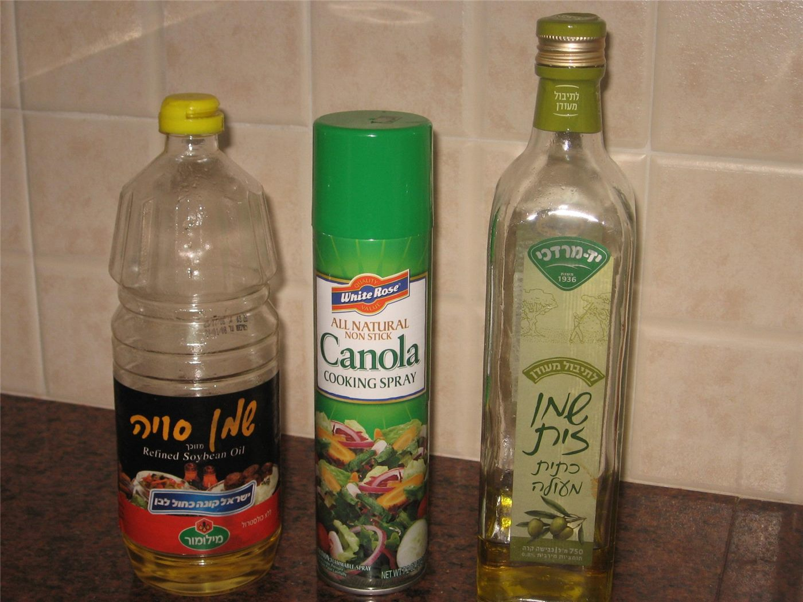

국제 유가 100달러 돌파에 뉴욕 증시 하락… 물가 재점화 우려
국제 유가가 배럴당 100달러를 넘어서면서 뉴욕 증시 3대 지수가 모두 내렸다. 물가 재상승 우려가 커지며 단기 조정 위험을 지적하는 분석이 잇따랐다.
마약란 기자 · 2026.09.13
橋경제·문화·스포츠

국제 유가가 배럴당 100달러를 넘어서면서 뉴욕 증시 3대 지수가 모두 하락했다. 에너지 가격 상승이 물가 지표에 다시 반영될 수 있다는 우려가 배경이다.
광고 문의 · 300×250월가 전략가들은 단기 조정 위험이 높아졌다며 몇 가지 근거를 제시했다. 밸류에이션 부담, 에너지 비용 상승, 지정학 변수의 장기화, 실적 전망의 하향 가능성이 함께 거론된다.
물가와 금리
유가 상승은 운송·화학·항공 등 여러 산업의 비용으로 즉시 전이된다. 이 경우 물가 지표 둔화 흐름이 멈추고, 금리 인하 기대가 후퇴할 수 있다.
다만 에너지 가격 상승분이 근원 물가에 얼마나 반영되는지는 시차가 있어, 한두 달 통계만으로 방향을 단정하기는 어렵다는 신중론도 있다.
아시아 시장
원유 순수입국인 한국·대만·일본은 유가 상승에 특히 민감하다. 정유·화학 업종의 재고 평가이익과 항공·해운의 연료비 부담이 동시에 나타난다.
다음 관전 지점은 주요국 물가 지표 발표와 산유국 회의 결과다. 두 변수 모두 단기 가격 경로를 바꿀 수 있다.
출처·참고 (사실 확인용 — 본문은 직접 재작성)
· https://udn.com/
· https://udn.com/